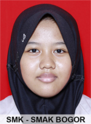
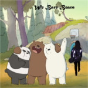

SUCI BLOGLIFE
Welcome to the blog of Suci's world
Biodata Diri
Perkenalkan nama saya Suci Ratu Permatasari, saya biasa dipanggil Suci. Saya lahir di Depok tanggal 24 Maret tahun 2001. Pada tahun 2018 ini saya akan berumur 17 tahun, artinya sebentar lagi saya akan memiliki KTP. Saya bersekolah di SMK SMAK Bogor, saya kelas 11. Tempat Tinggal saya di Gunung Putri Kabupaten Bogor. Saya tinggal bersama kedua orangtua saya serta adik dan kakak saya. Saya empat bersaudara, semua saudara saya perempuan. Saya adalah anak ke-3, memiliki 2 kakak perempuan dan 1 adik perempuan. Umur saya dan kakak terpaut jauh begitu pula adik saya. Hobi saya adalah menonton film kartun dan jalan-jalan. Makanan favorit saya adalah mie dan keju, sedangkan minuman favorit saya adalah air mineral dan kapucino. Ayah saya adalah seorang purnawirawan TNI Angkatan Darat. Dulu sewaktu ayah masih menjadi TNI, saya selalu melihatnya latihan di pagi hari. Ayah juga sangat hebat dalam bidang Bela Diri, ayah adalah salah satu pelatih Pencak Silat. Dulu saya sering berlatih bela diri, tapi karena saya malas untuk berlatih sekarang saya tidak berlatih bela diri lagi. Ibu saya adalah seseorang yang paling mengerti tentang saya. Saya memiliki banyak sekali teman yang dari kami kecil hingga sekarang masih bermain bersama. Meskipun kami berbeda sekolah dan cita-cita, kami akan tetap berjuang bersama.
Hobi saya
Hobi saya adalah menonton film kartun dan jalan-jalan. saya menyukai kartun karena kartun adalah hasil imajinasi seseorang yang dapat seseorang itu ungkapkan. Melalui imajinasi mereka, mereka dapat membuat ketertarikan tersendiri. Genre kartun yang saya sukai adalah action-comedy. Sedangkan yang sukai dari Jalan-jalan adalah karena saya dapat melihat sebuah pemandangan baru atau membuat kenangan baru bersama teman maupun keluarga.
Harapan saya
Dahulu ketika saya berumur 8 tahun saya bercita-cita menjadi seorang guru, lalu ketika saya SMP saya bercita-cita menjadi seorang analis, tetapi sekarang saya bercita-cita dapat mempelajari 5 bahasa asing. Tetapi keinginan saya menjadi seorang analis harus tercapai terlebih dahulu karena itu juga adalah keinginan keduaorangtuaku. Setelah saya mulai memikirkan masa depan saya, saya selalu berharap saya dapat terus melanjutkan study saya hingga keluar negeri. Yang paling saya harapkan sekarang adalah kebahagiaan keduaorangtua saya.

Kalau ada sumur di ladang
Bolehlah kita menumpang mandi
Kalau ada umurku panjang
Bolehlah kita bertemu lagi
XOXO
Suci Ratu Permatasari